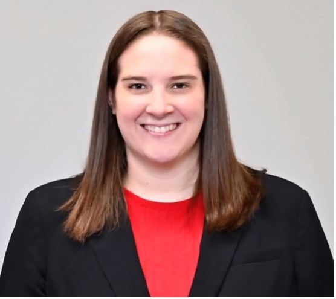

About Me

I am a graduate student in the Master of Data Science Program at the University of Colorado Boulder. Previously, I got my Master’s in Professional Accountancy at the University of Nebraska-Lincoln. I have several years of experience working in the accounting industry.
In my free time, I like to read, hike and hang out with my dogs. Growing up in one of the sandhill crane migration hubs in Central Nebraska has shown me the importance of this bird and what it does for the world. Volunteering during the crane migration season at the Iain Nicolson Audubon Center at Rowe Sanctuary is one of my favorite things to do.
- LinkedIn: www.linkedin.com/in/kyla-mcgregor-91b87240
- GitHub: github.com/kylamcgregor-eng